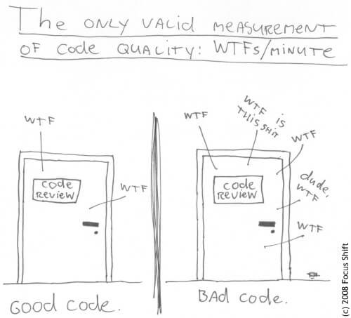

Clean Code
Writing clean code is what you must know and do in order to call yourself a professional developer. There is no reasonable excuse for doing anything less than your best.
First of all, what does clean coding mean?
Clean coding means that in the first place you write code for your later self and for your co-workers and not for the machine.
Your code must be easily understandable for humans.
You know you are working on a clean code when each routine you read turns out to be pretty much what you expected.
JavaScript Clean Coding Best Practices
How should I name my variables?
Use intention-revealing names and don't worry if you have long variable names instead of saving a few keyboard strokes.
If you follow this practice, your names become searchable, which helps a lot when you do refactors or you are just looking for something.
Also, make meaningful distinctions and don't add extra, unnecessary nouns to the variable names, like its type (hungarian notation).
Make your variable names easy to pronounce, because for the human mind it takes less effort to process.
When you are doing code reviews with your fellow developers, these names are easier to reference.
How should I write my functions?
Your functions should do one thing only on one level of abstraction.
Use long, descriptive names
Avoid long argument list
Reduce side effects
-
Organize your functions in a file according to the stepdown rule